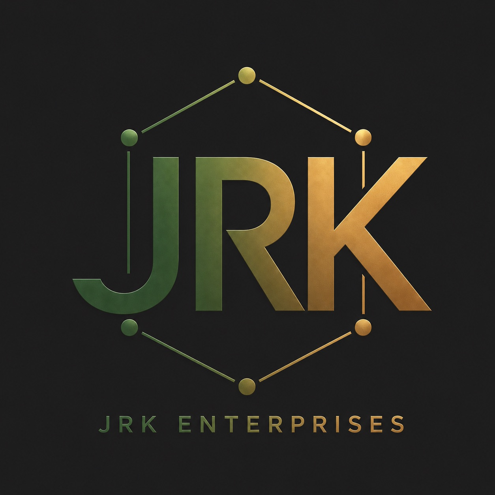

prJeKt: humAnIty · June 2026
Real questions deserve real answers.
No emergency required.
You'll know when you need it.

Joe Kunkel
Putnam, Connecticut
prJeKt: humAnIty · June 2026
No emergency required.
You'll know when you need it.

AI Governance &
Operator Framework
I help nontechnical people, small businesses, and local organizations use AI in plain language. No jargon. No tech team required. If implementation goes beyond my scope, I'll find the right people for you — and I won't charge you to figure that out.
Special rates for nonprofits, community organizations, and kids' centers — because that's where better systems matter most.
The full economic infrastructure of AI — evaluated against its human obligations. Eight layers synthesized from Jensen Huang (NVIDIA), Esra Kucukciftci (Pricing Innovations), and proJeKt: humAnIty (JRK Enterprises). The core question is not which AI is better. It is: does this system honor or extract from the human institutions it enters?
View source → 01_eight-layer-framework/ · 02_evaluation/
— deployable across any platform's installed base without requiring institutional fluency first."Copilot is built for the people who already don't need it."— Educational Exclusivity Argument · Joe Kunkel, JRK Enterprises · June 2026
The Educational Exclusivity Argument — five threads on why the biggest AI investment in enterprise history is optimally accessible to the population that least needs it.
The exec summary and NDA travel after the first response. If you're an attorney, a platform, or a serious operator — one email is enough to start.
Located in Putnam, Connecticut. Available nationally.
"When the going gets weird, the weird turn pro."
— Hunter S. Thompson
An independent comparative analysis applying the Eight-Layer AI Infrastructure Economy framework. The purpose is not to declare a winner — it is to demonstrate how the framework enables informed, human-centered platform decisions.
Evaluator: JRK Enterprises · Framework: Eight-Layer AI Infrastructure Economy · Status: Version 1.0 — Initial Assessment
| Layer | Microsoft | Perplexity | Edge |
|---|---|---|---|
| 01 Infrastructure | 4/5 | 3/5 | Microsoft |
| 02 Model Selection | 4/5 | 3/5 | Microsoft |
| 03 Orchestration | 4/5 | 3/5 | Microsoft |
| 04 Data | 3/5 | 4/5 | Perplexity |
| 05 Application | 3/5 | 4/5 | Perplexity |
| 06 Evaluation | 3/5 | 2/5 | Tied (low) |
| 07 Attachment | 2/5 | 3/5 | Perplexity |
| 08 Humanity | 2/5 | 3/5 | Perplexity |
| Weighted Total | 3.10 | 3.05 | Near parity |
“These are different tools for different purposes. The score gap is near parity — but the direction of each platform’s values is not.”Microsoft vs. Perplexity Evaluation · JRK Enterprises · 02_evaluation/microsoft-vs-perplexity.md
View full evaluation source → 02_evaluation/microsoft-vs-perplexity.md
Four foundational documents govern how proJeKt: humAnIty operates, evaluates, and engages. These are not guidelines — they are the operating principles that make the eight-layer framework coherent and trustworthy.
View source → 00_core-doctrine/
“A bridge doesn’t replace either shore. It makes both shores more accessible.”Bridge Doctrine · JRK Enterprises Core Doctrine · 00_core-doctrine/bridge-doctrine.md
Three operating systems govern how proJeKt: humAnIty deploys, tests, outreaches, and archives. These are not abstract frameworks — they are running protocols with defined steps, accountability checkpoints, and provenance logging at every stage.
View source → 04_station-architecture/ · 05_outreach/ · 07_resonance-logs/
“A station is not a destination. It is a designed place of passage.”Station Architecture · proJeKt: humAnIty · 04_station-architecture/README.md